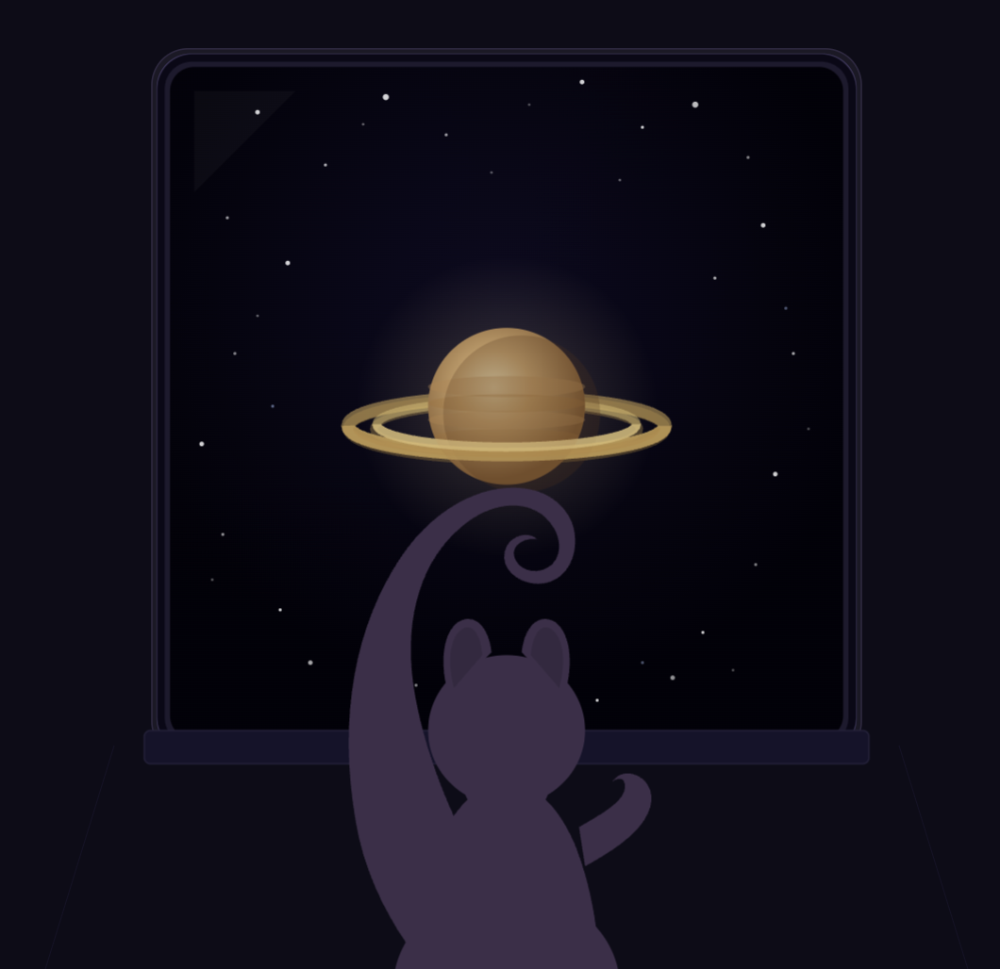

SIXTH PLANET FROM THE SUN
MEAN RADIUS: 58232 KM
NINETY-SEVEN KELVIN
SATURN
Cam: Oh, shit. Now should be good enough.
ALERT: Cryogenic Pod 008 defreezing.
Cam: Wake up, little buddy. Stretch those legs!
Cosmo: *Chitter*
Cosmo: Huuuh… Whuuh…
Cam: Your ship’s approaching Saturn right now. Check the window.
Cosmo: Gimme a second! My eyes feel blurry. Are they supposed to be this blurry?
Cam: It’s the cryogenic pod. It slows down most of your body function and ‘freezes’ over the top layer of your skin. Think of it like a full-body car wrap. That upper layer is frozen water that accumulated. Maybe next time, close your eyes!
Cosmo: Not my fault. I remember pressing the button and it happened so quickly.
Cosmo: …
Cosmo: Did you wake me up for any purpose? Did I earn Seinfeld time?
Cam: Well… Our pods aren’t too advanced just yet. We tried experimenting with longer-duration pods on subjects but the freezing agent would comatose the subject after a few months. The compromise was two months per pod usage. Maybe a little less if the subject is too large.
Cosmo: Heh. So if I was the size of an elephant?
Cam: You’d maybe save about one month for every month spent recovering.
Sidney: Not exactly.
Cosmo: Woah. Who’s that?
Cam: Wait, Sid! I was going to introduce you in a little bit. Give him time.
Cosmo: Why does he sound like Kramer?
Sidney: Wow. You weren’t wrong. This squirrel loves mid-tier comedy.
Cosmo: *Chitter*
Cosmo: Show yourself, asswipe. I’ll rip out your spine with my teeth.
Cam: Now you’ve done, Sid. Go ahead…
Sidney: Call me Sidney. I’m a coworker of Cameron. He helps in managing the inner workings of the ship, I help in optimizing the outer bits.
Cosmo: Why’s an engineer talking to me?
Sidney: For your information, I’m a programmer. And second-.
Cam: Cosmo. I tried keeping you away from the ruthless pencil-pushers at the homebase but they sent a plant after me. It’s fine, though. Sidney is a trustable guy and helped me through a lot of things. I thought, personally, it would be a good idea to start introducing you to more voices. More interaction that isn’t one-sided like Seinfeld.
Cosmo: He’s already not as funny as Jerry.
Sidney: Haha! He’s on a first-name basis. I love this squirrel. You would totally love this friend I have on base. Her name is Priya and-.
Cam: Going off topic, Sid…
Sidney: Sorry! I tend to talk too much. Being pent-up in my workstation makes me crazy. Cosmo, can you go to the nearest access panel? I have something to show you.
Cosmo: Okay.
Cosmo: I think I’m here.
Sidney: I’m patching in the instructions to reach the trajectory map. Just follow the glowing buttons on the touch-screen.
LOADING. LOADING.
Sidney: Do you have any recollection of the name, ‘Project Snow Luna’?
Cosmo: No.
Sidney: Cam, should I explain it?
Cam: I can say it. It’s my responsibility because I lead you this far, Cosmo. Project Stellar Lifeline is what the project really means. It’s a colony ship. Or, it was a colony ship. Five-hundred men and women lay dead in five-hundred cryo pods below your feet.
Cosmo: How’d the pods fail? I thought they were built to handle humans?
Sidney: It was a freak accident. A fifteen-by-fifteen meter rock hailing from the asteroid belt made an uncalculated shift while everyone slept. Not a soul was prepared in the barracks bay. Now, there’s a gaping hole in the hull wall.
Cam: All bright and brave people that had dreams. Aspirations. People chosen for this one purpose in seeding the stars in times of utter turmoil.
Cosmo: Turmoil? I remember green fields and clouds before I was taken. Why stress so much when calmer seas exist?
Sidney: There’s a human concept called society. The framework of people working together and being on the same page. While one person can live in a fruitful valley, people of their same nature live hundreds of miles away on a frontline. War and violence have spread to encompass most countries on Earth. Countries decades ago that were allies now split and waging war by land, sea, air, and now: space.
Cam: He’s right. New technology has been geared towards building military space-stations outside Earth’s orbit, creating AI-powered systems like Zeta to calculate maximum damage.
Cam: So that’s why a fledgeling department like ours decided to make a ship like this.
Cam: To give humanity a chance to forget its wars. Slide off the shackles of a society afraid of land and scarcity to advance as equals, not enemies. If alien species fail to exist, then space should be a realm of cooperation.
Cosmo: So your one chance is obliterated? The cruelty of humanity has prevailed?
Sidney: This is the doozy.
Sidney: Our metrics show two more people alive in cryo pods deep in the barracks bay. A man, some janitor that was chosen to sweep and clean the latrines. And another, a woman that serves as a cook. They are this project’s last hope.
Cosmo: Where are they?
Sidney: Due to time constraints during the first cryo-sleep, they settled in an emergency pod in the service corridor leading to the barracks. From this unlucky, slightly-uncomfortable sleeping spot, they secured humanity’s chance at prevailing. Thank God. Allah. Ahura-Mazda. Any deity that answered our call.
Cosmo: A janitor and a cook. Blue-collars are the heralds of humanity.
Sidney: While a bit harder, our archives can teach any human over the age of sixteen how to monitor the ship and the colony. And thank god for our third saving-grace.
Cosmo: Who? Is there a nonbinary on board too?
Cam: …
Cam: You, Cosmo, it’s you.
Cam: From the animal subjects we took to test livestock and survivability, only you survived the long process. Maybe it was your size, hardiness, what-have-you. But you’re special. I apologize again for forcing you into this process but out of one-million squirrels that were viable…
Cosmo: It was me.

Cam: It was always you.
Sidney: Log end.
Continue →